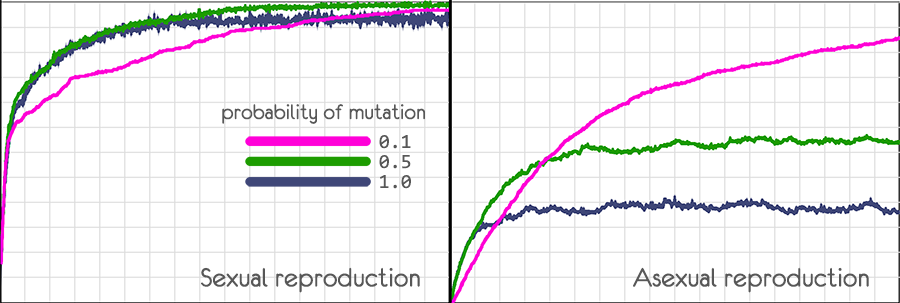
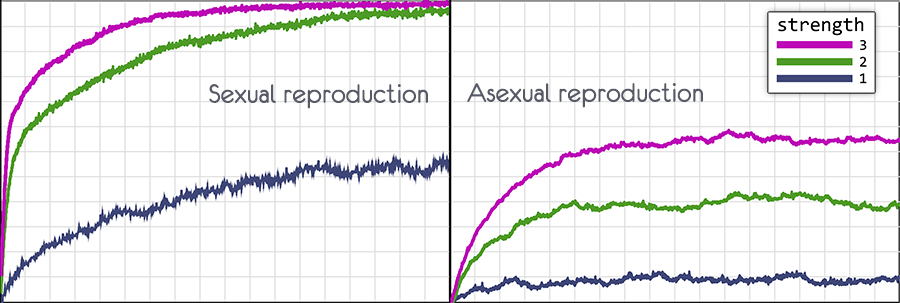

Попоробуем на небольших моделях сравнить половое и бесполое размножение.
Определимся с понятиями, которые будут использоваться в моделях
В реальности всё несколько сложнее.
Есть варианты полового размножения, где не происходит смешивание геномов (партеногенез), а организмы с бесполым размножением могут использовать альтернативные способы перемешивания геномов (горизонталный перенос генов)
Структуру реального генома достаточна сложна, но для простых математических моделей будет достаточно представлять его в виде простой последовательности
Начнём с первой простой модели.
вероятность мутации

В самом верху синим цветом представлен идеальный геном, к которому все организмы должны прийти.
Геном представляет из себя строку, длиной в 57 символов.
Всего 20 особей, их геном записан по строчкам.
Изначально геном организмов заполнен пробелами.
Для выполнения задачи даётся 900 поколений.
Приспособленность организма определяется тем, сколько символов в его геноме совпадает с символами в идеальном геноме.
В модели подобные совпадающие гены помеченны зелёным цветом.
Приспособленность организма показана с левой стороны.
В каждом поколении будем оставлять половину особей, на основе которых будет формироваться следующее поколение.
Можно было оставлять особи с наибольшей приспособленностью, но в модели используется более естественный способ.
Приспособленность особи определяет вероятность того, что она оставит потомство.
То есть даже самая приспособленная особь может погибнуть, не оставив потомства,
а наименее приспособленная может умудриться его оставить.
Такой вариант больше похоже на то, что происходит в реальности.
Рассмотрим, как это реализованно в модели
Например, у нас есть три особи с приспособленностью равной 11, 13, 12.
Нужно выбрать, кто оставит потомство.
приспособленность = приспособленость - (минимальная приспособленность - 1)
Каждый ход отбирается половина особей из которых будет формироваться следующее поколение.
Отобранные особи помечены символом решётки (#) с левой стороны.
Способ размножения определяется нами. Если поставить галочку в чекбоксе cross, то будет использоваться половое размножение.
После формирования нового поколения у каждой особи может произойти мутация.
Вероятность мутации можно задать самому.
При мутации символ в случайном месте генома особи меняется на другой случайный символ.
Допустим, нас есть два организма и каждый имеет один полезный ген в разных местах.
При бесполом размножении в популяции сможет остаться только один вариант.
Если было бы много вариантов полезных генов в разных местах у разных организмов,
то в итоге всё равно останется только один.
Что бы у организмов было два полезных гена вместо одного, нужно ждать удачную мутацию.
При половом размножении организм с двумя полезными генами может появиться уже в следующем поколении.
Глядя на эту схему, становиться понятным, что половое размножение намного эффективнее.
Но поиграв с первой простой моделью, вы обнаружите, что особых преимуществ не наблюдается.
Только при большой вероятности мутации, половое размножение начинает показывать лучшие результаты.
Дело в том, что половое размножение станет эффективнее безполого если в популяции одновремено существовуют много разных полезных генов у разных особей.
В этом случае все эти полезные мутации начнут соединяться в следующем поколении.
Добиться этого можно увеличением размера популяции и увеличением длины генома.
Чем больше размер популяции, тем больше разных полезных генов будет в поколении, тем более эффективным становиться половое размножение.
Но размер популяции также имеет колоссальную роль для естественного отбора.
В большой популяции даже небольшие преимущества, которые обеспечивает новая мутация, будут замечены естественным отбором и она быстро распространится по популяции.
Здесь стоит показать дополнительную модель, показывающую, как в популяции меняется частота вариантов одного и того же гена при смене поколений и как от размера популяции зависит эффективность естественного отбора.
размер популяции
адаптивное преимущество
стартовые пропорции
Некоторые понятия
В популяции могут присутствовать разные варианты одного и того же гена (аллели).
Если полезность каждого аллеля одинакова, то при переходе к следующиму поколению
будет наблюдаться смещение частот аллелей случайным образом.
Причём, чем меньше размер популяции, тем более резкие изменения в частоте аллелей будут происходить.
В популяции конечного размера одна аллель со временем вытеснит другую.
Чем меньше размер популяции, тем быстрее это произойдёт.
Если аллель даёт преимущество, то чем больше размер популяции, тем с большей вероятностью он вытеснит все остальные аллели.
В популяции маленького размера, аллель, дающий преимущество, вполне может исчезнуть благодаря случайным флуктуациям частоты аллеля из поколения в поколение.
В популяции маленького размера дрейф генов может играть более важную роль, чем естесвенный отбор.
Всё это можно увидеть на скриншотах запуска модели с разными параметрами.
Графики показывает распространения в популяции аллеля, дающего преимущество в 0.5 %.
На левом графике четыре симуляции при чиленности популяции равной 1000.
В двух случаях из четырёх аллель исчезла, даже несмотря на преимущество, которое оно обеспечивало.
На правом графике четыре симуляции при чиленности популяции равной 256000.
Естественный отбор подхватил это вариант гена и частота аллеля стала возрастать
Допустим, в популяции есть два варианта одного и того же гена:
Перед запуском модели можно определить
В модели симулируется изменение частоты сразу четырёх пар аллелей. и на графике они показаны разным цветом
Для определения частот аллелей в модели используется следующий алгоритм:
Например: размер популяции = 1000, вариант A = 400, варианта B = 600
Теперь мы 1000 раз генерируем случайное число от 0 до 1000.
Если вариантом A обеспечивает 1 % преимущество, то увеличиваем 400 на 1 % и получаем 404
Теперь мы 1000 раз генерируем случайное число от 0 до 1004. (404 + 600)
Это дальнейшее развитие первой модели, но здесь, что бы увидеть преимущество полового размножения, увеличен размер популяции (600, 1800, 5400) и размер генома (224).
Каждый ген может увеличивать приспособленность на единицу, уменьшать на единицу или ни как не влиять на приспособленность
Причём вероятность появления вредных мутаций в 90 раз выше.

Можно менять способы отображения:
С помощью чекбокса cross можно включать и отключать половое размножения.
Экпериментируя с моделью, можно убедиться, что при половом размножении не просто возрастает скорость, с которой растёт приспособленность популяции, но и возрастает граница к которой приспособленность может достигнуть.
На третьем изображении половое размножение было отключено и приспособленность сразу стала опускаться.

probability of mutation позволяет выбрать, с какой вероятностью у нового организма произойдёт мутация
(случайное изменение одного из генов)
Модель показывает, что при половом размножении это не сильно влияет на развитие популяции
Рекомбинация генетического материала позволяет быстро отсеивать вредные мутации и закреплять полезные
Причём, при увеличении вероятности мутаций, развитие может происходить быстрее.
При бесполом размножении увеличение вероятности мутаций не позволяет подняться приспособленности выше определённого уровня.
В модели можно выставить вероятность мутации в ноль и мутаций происходить не будет.
Без мутаций не будет появляться нового разнообразия и через короткое время геном всех организмов в популяции станет идентичным
При половом размножении, сохраниться значительная часть удачных вариантов, а большая часть вредных мутаций будет вытеснена из генома.
При бесполом размножении, потомки одного из организмов быстро вытеснят всех остальных.
Если позапускать несколько раз, то можно получить небольшое состязание пары вариантов генома
Последний вариант генома во всей популяции будет полной копией одного из начальных организмов

Этот эксперимент очень наглядно показывает преимущество полового размножения
А если взять популяцию не в 600 особей, а 5400, то при половом размножении появиться почти идеальный геном, в котором не хватает только десятка генов.
При бесполом размножении в конце останется только один из изначальных вариантов генома при любом размере популяции.
strength of selection позволяет регулировать силу отбора
Чем выше параметр, тем меньше шансов для менее приспособленных оставить потомство.
На рисунке показано, как будет выглядить вероятность оставить потомство у особей, чья приспособленность равна 11, 12 и 13.

При strength of selection = 0 , отбора нет.
Особи для оставления потомства выбираются полностью случайно.
В самой первой модели я объяснял, как происходит отбор
Теперь формула выглядит так
приспособленность = приспособленость - (минимальная приспособленность - constant)
Вместо единицы мы используем константу, которая зависит от значения strength of selection
При значении strength of selection = 1 , разница в выборе представляет из себя доли процента, но развитие всё равно происходит.
Если отключить отбор, strength of selection = 0, то геном популяции быстро вернётся в исходное состояние, когда каждый ген будет иметь случайное значение.
Одно из самых сильных влияний на развитие популяции оказывает численность популяции.
Можно выбрать три варианта численности популяции (600, 1800, 5400)
(В режиме genom видно только 600 геномов)
Для графиков использовался самый слабый отбор strength of selection = 1
При половом размножении вероятность мутации 0.5, при бесполом 0.1